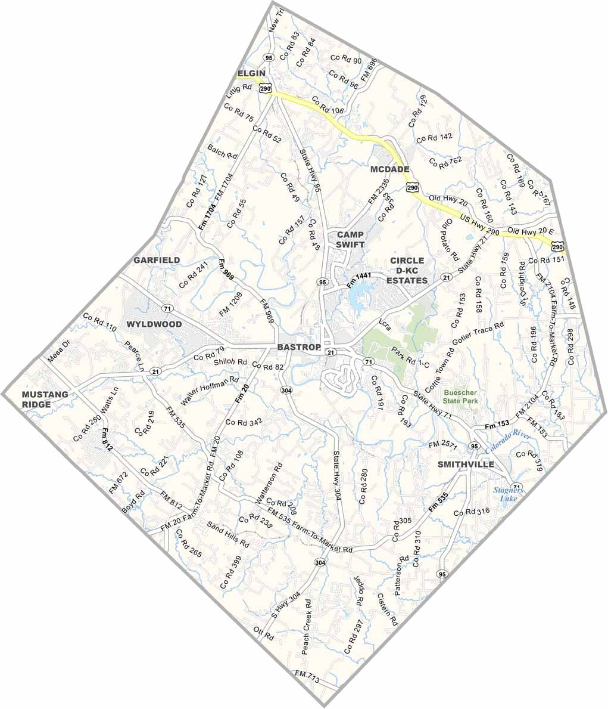

Texas Public Ambulance Corps is launching a pilot Mobile Integrated Health program to bring proactive, community-based healthcare directly to underserved populations in rural Central Texas.
Expanding access to quality, patient-centered care where it's needed most.
Texas Public Ambulance Corps (TPAC) is a nonprofit ambulance service and Mobile Integrated Health system dedicated to expanding access to quality, patient-centered care in rural Central Texas. We address healthcare disparities by delivering emergency and community-based services directly to underserved populations where care is limited or unavailable.
TPAC is currently in its beginning phase, launching a pilot Mobile Integrated Health (MIH) program in Bastrop County. Our goal is to bridge the gap in healthcare access by bringing proactive, community-based care directly to patients' homes — including chronic disease management, preventive screenings, post-discharge follow-ups, and health education.
Care designed around each patient's unique needs and circumstances.
Every decision guided by our commitment to community health.
Built by and for the communities we serve in rural Central Texas.
A phased approach to responsibly expand our reach and impact.
A phased approach to building a comprehensive EMS and community health system for rural Central Texas.
Launching a pilot MIH program in Bastrop County — delivering proactive community-based healthcare including chronic disease management, preventive screenings, post-discharge follow-ups, and health education directly to patients' homes.
Now LaunchingObtain an FRO License from Texas DSHS, allowing TPAC to operate as a licensed first responder organization in Bastrop County — the next step toward full EMS capability.
PlannedObtain a full EMS Provider License to operate ambulances, starting with Interfacility Transfer (IFT) transports — safely moving patients between healthcare facilities in the region.
PlannedExpand TPAC's services beyond Bastrop County to Lee County, Fayette County, and Caldwell County — bringing quality, patient-centered care to more underserved communities across rural Central Texas.
Long-Term VisionFrom community health programs to emergency medical services, TPAC is building a comprehensive care system for rural Central Texas.
Proactive, community-based healthcare delivered directly to patients' homes in Bastrop County.
Licensed first responder operations in Bastrop County, providing rapid emergency medical response to the community.
Full EMS ambulance operations including Interfacility Transfer (IFT) — safely transporting patients between healthcare facilities.

TPAC is focused on rural Central Texas communities where healthcare access is limited. Our pilot MIH program launches in Bastrop County, with plans to expand across the region.
Dedicated leaders guiding TPAC's mission to bring quality healthcare to rural Central Texas.
Providing strategic direction and oversight to advance TPAC's mission and growth.
Supporting organizational leadership and ensuring financial transparency and stewardship.
Managing organizational records and supporting board governance and compliance.
Trusted information and resources to help our community stay healthy and prepared.
Know the signs of a medical emergency and when to call for immediate help. Every second counts.
Learn More →Learn about cardiovascular health, warning signs of heart attack and stroke, and prevention tips.
Learn More →Resources for managing diabetes, hypertension, COPD, and other chronic conditions effectively.
Learn More →Information about health insurance options, Medicaid, and financial assistance programs in Texas.
Learn More →Find mental health resources, crisis hotlines, and local support services for Central Texas.
Learn More →Learn life-saving CPR and first aid skills. Find local training opportunities and certification courses.
Learn More →Join us at upcoming community events to learn, connect, and support rural healthcare in Central Texas.
Free hands-on CPR and basic first aid training for community members. Learn life-saving skills from certified instructors.
A community health fair offering free preventive screenings, health education, and connections to local healthcare resources.
Celebrating the official launch of TPAC's Mobile Integrated Health pilot program in Bastrop County.
Help us build a healthier future for rural Central Texas. Whether you're a healthcare professional or community advocate, there's a place for you at TPAC.
Help deliver care directly to patients in their homes as part of our MIH program. Training provided.
Join our growing team of EMS professionals as TPAC works toward full ambulance operations.
Support TPAC through volunteering, event coordination, community outreach, and administrative help.
Your tax-deductible donation to TPAC — a 501(c)(3) nonprofit — directly supports our pilot Mobile Integrated Health program in Bastrop County. Every dollar helps bring quality healthcare to underserved communities in rural Central Texas.
TPAC is a 501(c)(3) nonprofit. Your donation is tax-deductible.
Powered by Zeffy — 100% of your donation goes to TPAC.
Stay up to date with TPAC's progress, programs, and community impact.
Texas Public Ambulance Corps officially begins its pilot Mobile Integrated Health program in Bastrop County, bringing community-based healthcare to underserved populations.
2026Support TPAC's mission by donating to our "Closing the Gap" campaign — funding Mobile Integrated Healthcare for Bastrop County.
2026From Mobile Integrated Health to a fully licensed EMS provider — TPAC's phased roadmap for serving rural Central Texas communities.
2026We're grateful to our partners and sponsors who support TPAC's mission to improve rural healthcare.
Interested in partnering with TPAC? Get in touch →
Have questions about TPAC's MIH pilot program, volunteer opportunities, or how to support our mission? We'd love to hear from you.